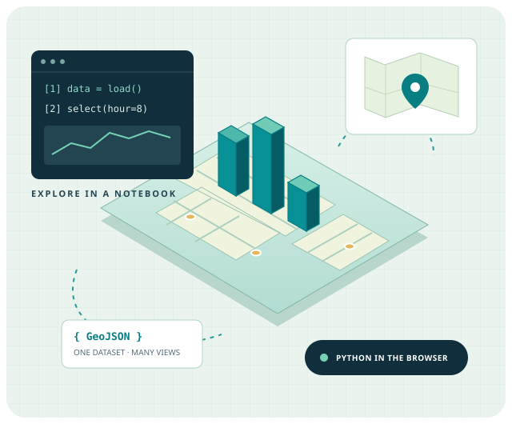

Make yourself at home
Run your first Python cells and inspect the teaching dataset in a notebook.
Launch the notebookGo from your first browser notebook to interactive maps and 3D scenes. One small dataset connects every step.
No installation · No account · Python runs in your browser

Change an hour, see the result, then take your GeoJSON into another tool.
Run your first Python cells and inspect the teaching dataset in a notebook.
Launch the notebookFilter synthetic NYC points with Python and explore a familiar street map.
Open the 2D mapTurn the same observations into geographic columns with a GPU renderer.
Open the 3D mapCompare a geographic map with a local coordinate scene built from the same data.
Open the 3D sceneRead working source, reuse the filter and learn where Python meets JavaScript.
Explore app authoringExport a selection and bring it into GeoLibre, RustGIS or JupyterGIS.
Try the GIS handoffThe companion Jupyter Book explains the ideas behind each activity, including runtime boundaries and the NYC Taxi inspiration.
Read the companion book →